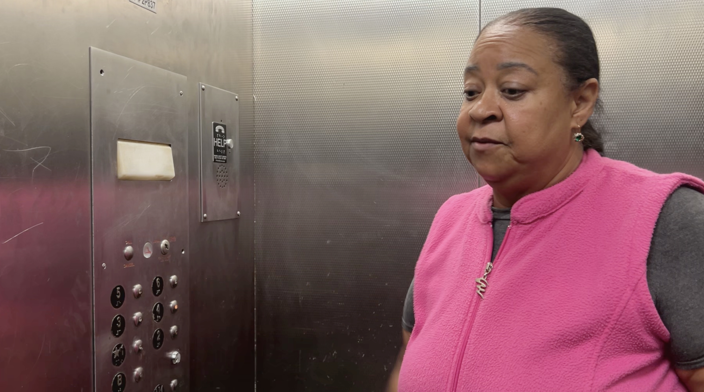
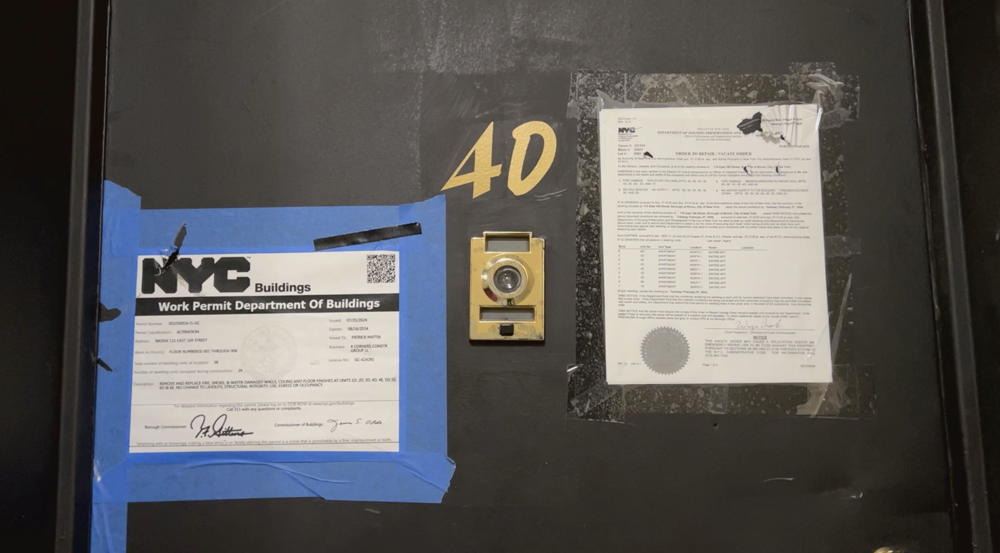

After a Fire, Residents of One Bronx Building Have Waited Months For Repairs
After complaints about living conditions and then a fire, a court ordered the landlord to make repairs. Nine months later, tenants say the repairs have not been completed.
By Nicol Leon
February 8, 2025

The tenants of the building located at 115 East 169th Street, in the Bronx, continue to wait for the landlord Denali Management of Yonkers to comply with the court ruling and make repairs to environments in poor condition. Photo Credit // Nicol Leon
Nelia Ruiz says that she has had to buy poison spray to treat every room in her apartment in the Highbridge section of the Bronx because, at any time of day, “thousands of cockroaches appear.” Most enter through a hole in the broken bathroom pipe, which also leaks water most of the time.
“Cockroaches come out of there, even white ones, which are the queens of cockroaches,” said Ruiz, sitting on a chair outside her apartment door. “I have to fumigate every day.”
Ruiz, 50, who came to New York from the Dominican Republic as a child and has lived in the building on 115 East 169th Street for 10 years, says the owner, Denali Management of Yonkers, has failed to address problems that she and eight other tenants have complained about to the New York City Department of Housing Preservation and Development (HPD) for almost two years. They include holes in ceilings, electrical issues, and rats and cockroaches.
The mice can cause infectious diseases like the Zika virus, Lyme disease, and rabies; meanwhile, cockroaches can trigger asthma and allergy symptoms, according to the Centers for Disease Control and Prevention (CDC), and the U.S. Department of Agriculture.

Nelia Ruiz was one of the tenants that denounced the landlord Denali Management of Yonkers. Photo Credit // Nicol Leon
In a search of Denali properties, NYCity News Service found that this company is associated with 5 other properties, all located in the Bronx.
In January, tenants of the East 169th building filed suit in New York City Civil Court seeking to force Denali to make the repairs. A month later, a fire in nine apartments left the building “unfit for human habitation,” according to HPD. On April 22, Judge Krzysztof Lach ordered that the burned-out apartments be repaired by May and that the rodents and roaches be exterminated in individual apartments and the common areas. Nine months later, the repairs have not been completed, say the neighbors who filed the complaint, and the tenants of the burned apartments have not returned.
“We have continued to sue for all the violations that everyone has in their apartment,” Ruiz said. “Mine are not so big, but we have to fix them because I pay my rent to live with dignity.”
"
On April 22, Judge Krzysztof Lach ordered that the burned-out apartments be repaired by May and that the rodents and roaches be exterminated in individual apartments and the common areas
"
Since 2023, HPD has recorded 294 complaints from the tenants about problems including malfunctioning doors, radiators, appliances and smoke detectors; pests; mold, and broken windows, to name a few, according to a database analyzed. Of that total, 94 have yet to be resolved.
Ruiz lives next to two apartments closed by the fire. “It has been a year since the fire occurred,” she said. “I am not one of those affected, but I can tell you that there are three employees who are doing the repairs. That is why it is so slow.”
Now many of the fire victims are sleeping on family members’ couches. Denali has not offered them any temporary residence while repairs are made, according to a document sent by the tenants’ attorney to the Bronx Civil Court in September.
In April, Lach ordered Denali to make the necessary repairs outlined in both the neighbors’ complaint and the damage that the fire caused. He gave Denali a month to repair the broken ceilings, windows and walls of the burned apartments, and to restore gas and water, which had been cut off after the fire. Such hazards, according to HPD, are “dangerous to life, and detrimental to the health and safety of the occupant and other persons.”
The judge also ordered ceiling repairs in the other apartments and the extermination of cockroaches and rats.
According to HPD, the repairs began in September, and by September, only 30% progress had been made. Ruiz, Glenys Abreu, Valentín López and other tenant plaintiffs say Denali has made only some non-urgent repairs, such as changing handles and installing door viewers, while pests and holes in the ceilings persist. When NYCity News Service asked this City’s department which is the current status of this case, they responded that they would respond with that information, but has since not responded.
Asked for comment, Denali responded that it had already made major repairs and work continues. It emphasized that it was working with neighbors and City Councilwoman Althea Stevens, who represents the neighborhood. Ruiz, Abreu and López confirmed that Stevens had offered her help in completing the repairs as soon as possible.
“With respect to 115 E. 169th St., we have been working directly with the building’s Tenants Association, individual tenants and Councilwoman Stevens to ensure that repairs are made and that we are in compliance with city regulations,” Denali said in October, through an email. “We have made significant progress and continue to address issues as they arise and when we are allowed access to make repairs. We look forward to finalizing the outstanding issues and continuing a productive landlord-tenant relationship.”
According to the court filing, in May – almost a month after the judge ordered the company to make the repairs – attorneys for Denali responded to the court that it was unfair to include the fire repairs with the plaintiffs’ complaints and asked for more time to review the filing.
"
Ruiz, Glenys Abreu, Valentín López and other tenant plaintiffs say Denali has made only some non-urgent repairs, such as changing handles and installing door viewers, while pests and holes in the ceilings persist
"
The tenants’ attorney, Douglas Henderson of Bronx Legal Services, said this argument, as well as a change of Denali’s attorneys when the case was already advanced and its failure to reach an agreement with the tenants despite assurances that it would do so, only seek to slow down the compliance process.
“The interesting thing is that the owner is fighting it,” Henderson said in a telephone interview. “We were on the verge of reaching an agreement, weren’t we? We went into talks with the owner to settle, but they weren’t serious. They were just dragging it out, and I said this in court. They were just stalling to make some repairs, and when we went back to court they would say ‘Hey, there are no repairs to be made.’”
According to the last affidavit HPD sent to the court in September, workers made it difficult for the authorities to gain access to the burned apartments, because the super never opened the door when they went to visit them. This made it impossible to corroborate whether any progress had been made. HPD was unable to document some repair work until Aug. 5.
On Sept. 3, HPD’s Inspector McKenzie said he “observed that in apartments 4D, 5D and 6D the cleanup and demolition of fire debris had been completed and new metal studs were being installed,” the document notes. “In apartments 4E, 5E and 6E plaster and paint were being applied. In apartment 2D, painting was in progress. In department 3D the drywall had been completed. In apartment 1D no work was in progress and no work had begun.”

Tenants that were living in the apartment 4D before the fire can't come back because the tenants didn't finish the repairs ordered by a judge. Photo Credit // Nicol Leon
López, 40, an immigrant from the Dominican Republic, said cockroaches continue to appear inside his refrigerator and that bathroom tiles have not been replaced.
“They told me that they were going to change it and that they were going to see if they could get me some new ones,” he said, showing images to document his complaint. “But to this day they have done nothing.”
As of November, according to an affidavit signed by Abreu, 42, also from the Dominican Republic, her apartment was still infested with rats, the living room door frame was damaged and her apartment had 12 other problems.
“They exchanged an old stove for another old stove,” she said, “and in the fridge they also did the same thing. I told them ‘OK, but don’t let the cockroaches get into the stove,’ and they continue to get into the refrigerator.”
In view of Denali’s failure to complete the repairs, Ruiz says she and her neighbors have opted to continue meeting and to alert their lawyer about the progress of repairs.
“One day the manager comes and asks me, ‘And what would you do to stop the meetings?’ “ she said. Ruiz answered: “When you finish the repairs, everything will stop automatically. I will not have to say anything because nobody will ask for anything because there will be nothing to ask.”